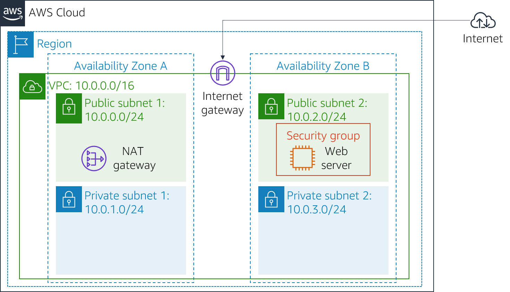
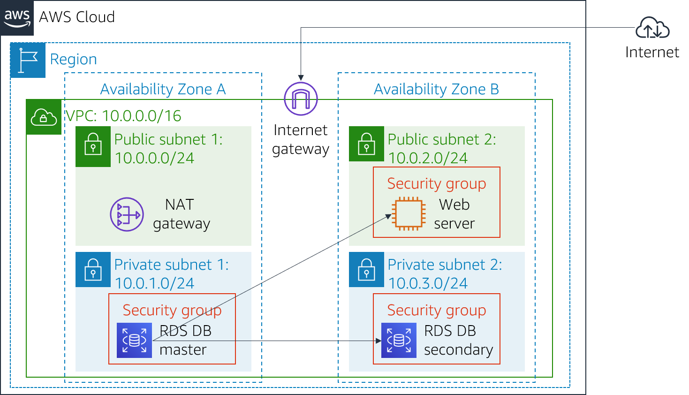

Version 4.6.6 (TESS2)
This lab is designed to reinforce the concept of leveraging an AWS-managed database instance for solving relational database needs.
Amazon Relational Database Service (Amazon RDS) makes it easy to set up, operate, and scale a relational database in the cloud. It provides cost-efficient and resizable capacity while managing time-consuming database administration tasks, which allows you to focus on your applications and business. Amazon RDS provides you with six familiar database engines to choose from: Amazon Aurora, Oracle, Microsoft SQL Server, PostgreSQL, MySQL and MariaDB.
Objectives
After completing this lab, you can:
Duration
This lab takes approximately 30 minutes.
Scenario
You start with the following infrastructure: 
At the end of the lab, this is the infrastructure:

At the top of these instructions, choose Start Lab to launch your lab.
A Start Lab panel opens displaying the lab status.
Wait until you see the message "Lab status: ready", then choose the X to close the Start Lab panel.
At the top of these instructions, choose AWS
This will open the AWS Management Console in a new browser tab. The system will automatically log you in.
Tip: If a new browser tab does not open, there will typically be a banner or icon at the top of your browser indicating that your browser is preventing the site from opening pop-up windows. Choose on the banner or icon and choose "Allow pop ups."
Arrange the AWS Management Console tab so that it displays along side these instructions. Ideally, you will be able to see both browser tabs at the same time, to make it easier to follow the lab steps.
In this task, you will create a security group to allow your web server to access your RDS DB instance. The security group will be used when you launch the database instance.
In the AWS Management Console, on the Services menu, choose VPC.
In the left navigation pane, choose Security Groups.
Choose Create security group and then configure:
DB Security GroupPermit access from Web Security GroupYou will now add a rule to the security group to permit inbound database requests.
In the Inbound rules pane, choose Add rule
The security group currently has no rules. You will add a rule to permit access from the Web Security Group.
Configure the following settings:
sg and then select Web Security Group.This configures the Database security group to permit inbound traffic on port 3306 from any EC2 instance that is associated with the Web Security Group.
Choose Create security group
You will use this security group when launching the Amazon RDS database.
In this task, you will create a DB subnet group that is used to tell RDS which subnets can be used for the database. Each DB subnet group requires subnets in at least two Availability Zones.
On the Services menu, choose RDS.
In the left navigation pane, choose Subnet groups.
If the navigation pane is not visible, choose the menu icon in the top-left corner.
Choose Create DB Subnet Group then configure:
DB-Subnet-GroupDB Subnet GroupScroll down to the Add Subnets section.
Expand the list of values under Availability Zones and select the first two zones: us-east-1a and us-east-1b.
Expand the list of values under Subnets and select the subnets associated with the CIDR ranges 10.0.1.0/24 and 10.0.3.0/24.
These subnets should now be shown in the Subnets selected table.
Choose Create
You will use this DB subnet group when creating the database in the next task.
In this task, you will configure and launch a Multi-AZ Amazon RDS for MySQL database instance.
Amazon RDS Multi-AZ deployments provide enhanced availability and durability for Database (DB) instances, making them a natural fit for production database workloads. When you provision a Multi-AZ DB instance, Amazon RDS automatically creates a primary DB instance and synchronously replicates the data to a standby instance in a different Availability Zone (AZ).
In the left navigation pane, choose Databases.
Choose Create database
If you see Switch to the new database creation flow at the top of the screen, please choose it.
Select MySQL.
Under Settings, configure:
lab-dbmainlab-passwordlab-passwordUnder DB instance class, configure:
Under Storage, configure:
Under Connectivity, configure:
Under Existing VPC security groups, from the dropdown list:
Expand Additional configuration, then configure:
labThis will turn off backups, which is not normally recommended, but will make the database deploy faster for this lab.
Choose Create database
Your database will now be launched.
If you receive an error that mentions "not authorized to perform: iam:CreateRole", make sure you unchecked Enable Enhanced monitoring in the previous step.
Choose lab-db (choose the link itself).
You will now need to wait approximately 4 minutes for the database to be available. The deployment process is deploying a database in two different Availability zones.
While you are waiting, you might want to review the Amazon RDS FAQs or grab a cup of coffee.
Wait until Info changes to Modifying or Available.
Scroll down to the Connectivity & security section and copy the Endpoint field.
It will look similar to: lab-db.cggq8lhnxvnv.us-west-2.rds.amazonaws.com
Paste the Endpoint value into a text editor. You will use it later in the lab.
In this task, you will open a web application running on your web server and configure it to use the database.
To copy the WebServer IP address, choose on the Details drop down menu above these instructions, and then choose Show.
Open a new web browser tab, paste the WebServer IP address and press Enter.
The web application will be displayed, showing information about the EC2 instance.
Choose the RDS link at the top of the page.
You will now configure the application to connect to your database.
Configure the following settings:
labmainlab-passwordA message will appear explaining that the application is running a command to copy information to the database. After a few seconds the application will display an Address Book.
The Address Book application is using the RDS database to store information.
Test the web application by adding, editing and removing contacts.
The data is being persisted to the database and is automatically replicating to the second Availability Zone.
Congratulations! You have completed the lab.
Choose End Lab at the top of this page and then choose Yes to confirm that you want to end the lab.
A panel will appear, indicating that "DELETE has been initiated... You may close this message box now."
Choose the X in the top right corner to close the panel.
For feedback, suggestions, or corrections, please email us at: aws-course-feedback@amazon.com
Bootstrap v3.3.5 - http://getbootstrap.com/
The MIT License (MIT)
Copyright (c) 2011-2016 Twitter, Inc.
Permission is hereby granted, free of charge, to any person obtaining a copy of this software and associated documentation files (the "Software"), to deal in the Software without restriction, including without limitation the rights to use, copy, modify, merge, publish, distribute, sublicense, and/or sell copies of the Software, and to permit persons to whom the Software is furnished to do so, subject to the following conditions:
The above copyright notice and this permission notice shall be included in all copies or substantial portions of the Software.
THE SOFTWARE IS PROVIDED "AS IS", WITHOUT WARRANTY OF ANY KIND, EXPRESS OR IMPLIED, INCLUDING BUT NOT LIMITED TO THE WARRANTIES OF MERCHANTABILITY, FITNESS FOR A PARTICULAR PURPOSE AND NONINFRINGEMENT. IN NO EVENT SHALL THE AUTHORS OR COPYRIGHT HOLDERS BE LIABLE FOR ANY CLAIM, DAMAGES OR OTHER LIABILITY, WHETHER IN AN ACTION OF CONTRACT, TORT OR OTHERWISE, ARISING FROM, OUT OF OR IN CONNECTION WITH THE SOFTWARE OR THE USE OR OTHER DEALINGS IN THE SOFTWARE.